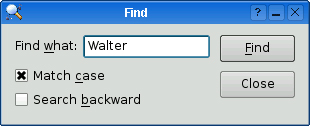
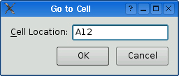
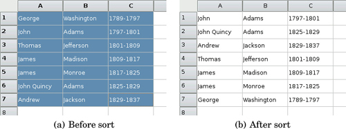
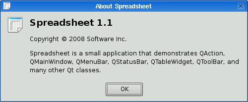

|
|
In this section, we will explain how to use dialogs in Qt—how to create and initialize them, run them, and respond to choices made by the user interacting with them. We will make use of the Find, Go to Cell, and Sort dialogs that we created in Chapter 2. We will also create a simple About box.
We will begin with the Find dialog shown in Figure 3.12. Since we want the user to be able to switch between the main Spreadsheet window and the Find dialog at will, the Find dialog must be modeless. A modeless window is one that runs independently of any other windows in the application.

When modeless dialogs are created, they normally have their signals connected to slots that respond to the user's interactions.
void MainWindow::find()
{
if (!findDialog) {
findDialog = new FindDialog(this);
connect(findDialog, SIGNAL(findNext(const QString &,
Qt::CaseSensitivity)),
spreadsheet, SLOT(findNext(const QString &,
Qt::CaseSensitivity)));
connect(findDialog, SIGNAL(findPrevious(const QString &,
Qt::CaseSensitivity)),
spreadsheet, SLOT(findPrevious(const QString &,
Qt::CaseSensitivity)));
}
findDialog->show();
findDialog->raise();
findDialog->activateWindow();
}
The Find dialog is a window that enables the user to search for text in the spreadsheet. The find() slot is called when the user clicks Edit|Find to pop up the Find dialog. At that point, several scenarios are possible:
This is the first time the user has invoked the Find dialog.
The Find dialog was invoked before, but the user closed it.
The Find dialog was invoked before and is still visible.
If the Find dialog doesn't already exist, we create it and connect its findNext() and findPrevious() signals to the corresponding Spreadsheet slots. We could also have created the dialog in the MainWindow constructor, but delaying its creation makes application startup faster. Also, if the dialog is never used, it is never created, saving both time and memory.
Then we call show(), raise(), and activateWindow() to ensure that the window is visible, on top of the others, and active. A call to show() alone is sufficient to make a hidden window visible, on top, and active, but the Find dialog may be invoked when it is already visible. In that case, show() does nothing and we must call raise() and activateWindow() to make the window on top and active. An alternative would have been to write
if (findDialog->isHidden()) {
findDialog->show();
} else {
findDialog->raise();
findDialog->activateWindow();
}
but this is the programming equivalent of looking both ways before crossing a one-way street.
We will now look at the Go to Cell dialog shown in Figure 3.13. We want the user to pop it up, use it, and close it without being able to switch to any other window in the application. This means that the Go to Cell dialog must be modal. A modal window is a window that pops up when invoked and blocks the application, preventing any other processing or interactions from taking place until the window is closed. The file dialogs and message boxes we used earlier were modal.

A dialog is modeless if it's invoked using show() (unless we call setModal() beforehand to make it modal); it is modal if it's invoked using exec().
void MainWindow::goToCell()
{
GoToCellDialog dialog(this);
if (dialog.exec()) {
QString str = dialog.lineEdit->text().toUpper();
spreadsheet->setCurrentCell(str.mid(1).toInt() - 1,
str[0].unicode() - 'A');
}
}
The QDialog::exec() function returns a true value (QDialog::Accepted) if the dialog is accepted, and a false value (QDialog::Rejected) otherwise. Recall that when we created the Go to Cell dialog using Qt Designer in Chapter 2, we connected OK to accept() and Cancel to reject(). If the user chooses OK, we set the current cell to the value in the line editor.
The QTableWidget::setCurrentCell() function expects two arguments:a row index and a column index. In the Spreadsheet application, cell A1 is cell (0, 0) and cell B27 is cell (26, 1). To obtain the row index from the QString returned by QLineEdit::text(), we extract the row number using QString::mid() (which returns a substring from the start position to the end of the string), convert it to an int using QString::toInt(), and subtract 1. For the column number, we subtract the numeric value of 'A' from the numeric value of the string's uppercased first character. We know that the string will have the correct format because the QRegExpValidator we created for the dialog allows the OK button to be enabled only if we have a letter followed by up to three digits.
The goToCell() function differs from all the code seen so far in that it creates a widget (a GoToCellDialog) as a variable on the stack. At the cost of one extra line, we could just as easily have used new and delete:
void MainWindow::goToCell()
{
GoToCellDialog *dialog = new GoToCellDialog(this);
if (dialog->exec()) {
QString str = dialog->lineEdit->text().toUpper();
spreadsheet->setCurrentCell(str.mid(1).toInt() - 1,
str[0].unicode() - 'A');
}
delete dialog;
}
Creating modal dialogs (and context menus) on the stack is a common programming pattern since we usually don't need the dialog (or menu) after we have used it, and it will automatically be destroyed at the end of the enclosing scope.
We will now turn to the Sort dialog. The Sort dialog is a modal dialog that allows the user to sort the currently selected area by the columns they specify. Figure 3.14 shows an example of sorting, with column B as the primary sort key and column A as the secondary sort key (both ascending).

void MainWindow::sort()
{
SortDialog dialog(this);
QTableWidgetSelectionRange range = spreadsheet->selectedRange();
dialog.setColumnRange('A' + range.leftColumn(),
'A' + range.rightColumn());
if (dialog.exec()) {
SpreadsheetCompare compare;
compare.keys[0] =
dialog.primaryColumnCombo->currentIndex();
compare.keys[1] =
dialog.secondaryColumnCombo->currentIndex() - 1;
compare.keys[2] =
dialog.tertiaryColumnCombo->currentIndex() - 1;
compare.ascending[0] =
(dialog.primaryOrderCombo->currentIndex() == 0);
compare.ascending[1] =
(dialog.secondaryOrderCombo->currentIndex() == 0);
compare.ascending[2] =
(dialog.tertiaryOrderCombo->currentIndex() == 0);
spreadsheet->sort(compare);
}
}
The code in sort() follows a similar pattern to that used for goToCell():
We create the dialog on the stack and initialize it.
We pop up the dialog using exec().
If the user clicks OK, we extract the values entered by the user from the dialog's widgets and make use of them.
The setColumnRange() call sets the columns available for sorting to the columns that are selected. For example, using the selection shown in Figure 3.14, range.leftColumn() would yield 0, giving 'A' + 0 = 'A', and range.rightColumn() would yield 2, giving 'A' + 2 = 'C'.
The compare object stores the primary, secondary, and tertiary sort keys and their sort orders. (We will see the definition of the SpreadsheetCompare class in the next chapter.) The object is used by Spreadsheet::sort() to compare two rows. The keys array stores the column numbers of the keys. For example, if the selection extends from C2 to E5, column C has position 0. The ascending array stores the order associated with each key as a bool. QComboBox::currentIndex() returns the index of the currently selected item, starting at 0. For the secondary and tertiary keys, we subtract one from the current item to account for the "None" item.
The sort() function does the job, but it is a bit fragile. It assumes that the Sort dialog is implemented in a particular way, with comboboxes and "None" items. This means that if we redesign the Sort dialog, we may also need to rewrite this code. While this approach is adequate for a dialog that is called only from one place, it opens the door to maintenance nightmares if the dialog is used in several places.
A more robust approach is to make the SortDialog class smarter by having it create a SpreadsheetCompare object itself, which can then be accessed by its caller. This simplifies MainWindow::sort() significantly:
void MainWindow::sort()
{
SortDialog dialog(this);
QTableWidgetSelectionRange range = spreadsheet->selectedRange();
dialog.setColumnRange('A' + range.leftColumn(),
'A' + range.rightColumn());
if (dialog.exec())
spreadsheet->performSort(dialog.comparisonObject());
}
This approach leads to loosely coupled components and is almost always the right choice for dialogs that will be called from more than one place.
A more radical approach would be to pass a pointer to the Spreadsheet object when initializing the SortDialog object and to allow the dialog to operate directly on the Spreadsheet. This makes the SortDialog much less general, since it will work only on a certain type of widget, but it simplifies the code even further by eliminating the SortDialog::setColumnRange() function. The MainWindow::sort() function then becomes
void MainWindow::sort()
{
SortDialog dialog(this);
dialog.setSpreadsheet(spreadsheet);
dialog.exec();
}
This approach mirrors the first: Instead of the caller needing intimate knowledge of the dialog, the dialog needs intimate knowledge of the data structures supplied by the caller. This approach may be useful where the dialog needs to apply changes live. But just as the caller code is fragile using the first approach, this third approach breaks if the data structures change.
Some developers choose just one approach to using dialogs and stick with that. This has the benefit of familiarity and simplicity since all their dialog usages follow the same pattern, but it also misses the benefits of the approaches that are not used. Ideally, the approach to use should be decided on a per-dialog basis.
We will round off this section with the About box. We could create a custom dialog like we did for the Find dialog or the Go to Cell dialog to present the information about the application, but since most About boxes are highly stylized, Qt provides a simpler solution.
void MainWindow::about()
{
QMessageBox::about(this, tr("About Spreadsheet"),
tr("<h2>Spreadsheet 1.1</h2>"
"<p>Copyright © 2008 Software Inc."
"<p>Spreadsheet is a small application that "
"demonstrates QAction, QMainWindow, QMenuBar, "
"QStatusBar, QTableWidget, QToolBar, and many other "
"Qt classes."));
}
The About box is obtained by calling QMessageBox::about(), a static convenience function. The function is very similar to QMessageBox::warning(), except that it uses the parent window's icon instead of the standard "warning" icon. The resulting dialog is shown in Figure 3.15.

So far, we have used several convenience static functions from both QMessageBox and QFileDialog. These functions create a dialog, initialize it, and call exec() on it. It is also possible, although less convenient, to create a QMessageBox or a QFileDialog widget like any other widget and explicitly call exec(), or even show(), on it.
|
|
| Converted from CHM to HTML with chm2web Pro 2.85 (unicode) |